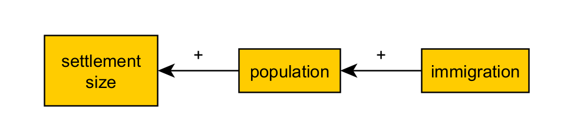
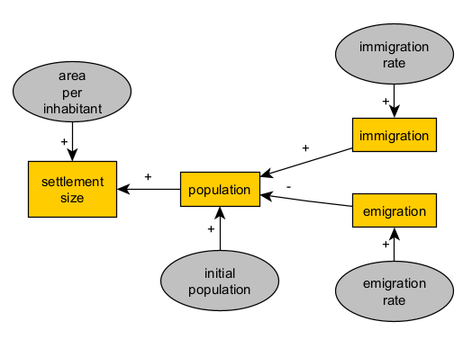
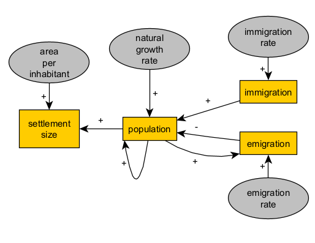
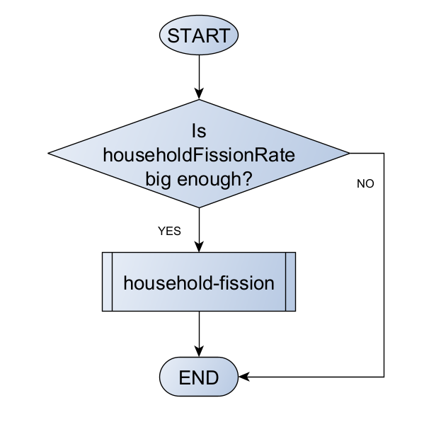

| archaeological evidence | phenomena in the past | mechanisms |
|---|---|---|
| distribution and size of settlements | subsistence, demographic growth dependent on environmental factors, mobility and sedentary lifestyle | logistic function, areas of influence and catchment, competition between settlements |
| funerary context (number and style of artifacts, determination of age and sex, morphological and genetic proximity between individuals, etc.) | ritual burial of certain individuals (beliefs, population composition, asymmetries and inequalities, etc.), mortality (frequency, contexts), decision making and logistics regarding funerary practice | institutionalization of prestige and authority status, effects of taboo on logistical stages of burial, inequality between kinship groups |
| detection of organic residues on the surface of ceramic vessels | production (surface treatment) and use of vessels (storage, cooking, food consumption), decision making in production, selection of recipes and dietary components | residue signal (quantified) as a function of type of use |
| distribution and diversity of varieties of a very common type of artifact (lithic instruments, ceramics, etc.) | movements of people and artifacts, cultural transmission of ways of producing and/or using said artifacts | cultural transmission (drift), prestige and functional selection |
| frequency of species in charcoal between the strata of a deposit | climate changes that limit or enhance growth by species, selective size, fires, deforestation | plant growth by species group that explicitly accounts for recurrent clearing |
| oldest C14 dating of the presence of domesticated plants and animals in sites distributed throughout a region | demographic growth and migration, interaction between groups with and without domestication (exchange, assimilation, conflict, etc.) | competition for habitat between agropastoral groups and hunter-gatherers |
| volume of a mineral extracted in a deposit with mining, duration of occupation and activity | subsistence and liberation of labor, decision making on mining intensity, use and exchange of minerals | economy of scale and diminishing returns |
4 Conceptual design or modeling
4.1 Introduction
The objective of this session is to introduce the first and most important stage in the application of simulation, system definition and model design, to archeology topics.
Given a general topic of interest associated with a certain type of archaeological evidence, we must produce a conceptual model that contains a definition of the minimum features of a phenomenon or system (representation), with a view to its mathematical formalization (mechanism). so that it contributes to the answer to one or more research questions or to refute or reformulate a working hypothesis (validation).

Conceptual modelling reflects the exploratory nature of explanatory modelling. In this context, we should consider the maximum number of potential explanations and subsequently prioritise those that are arguably or demonstrably more likely, all given the limits of our knowledge. In building a model, we should include additional elements parsimoniously and keep in mind that this conceptual definition should help us in creating a computational model (implementation) that is intelligible and computable in a reasonable period of time.
When creating your first conceptual model, I recommend starting from scratch with the first intuition that comes to mind. After later scrutiny, its logic structure may be oversimplified, incomplete, or faulty. However, it would most likely represent the main elements of an informal model that you and other researchers share. Relying on an informed guess to start model development is the best remedy for the “blank page panic”. It will also help you avoid overthinking and overworking what should be a mere preliminary sketch of the model.
Said this, we might still suffer when trying to jump-start the modelling process. Even if (or maybe especially when) a sizeable interdisciplinary team is involved, such is often the case in ABM-related projects.
4.2 Considering archaeological evidence and its interpretations (explanations)
Archaeological evidence can be interpreted to understand past phenomena, and these interpretations often involve proposing underlying mechanisms. The relationship between evidence, phenomenon, and mechanism can be understood as follows:
Evidence: This refers to the physical remains or data that archaeologists uncover. This can include artifacts, structures, or environmental data. Pieces of evidence vary in level of description, from pottery styles to the position of fortifications and the abundance of animal species. They also vary in the methods used to define them, like visual analysis, geometric analysis, 3D scanning, and GPS.
Phenomenon: The phenomenon is the pattern or process inferred from the evidence. It is the “what” that happened, based on the interpretation of the evidence, but also the benchmark definition of reality, based in a much longer list of experiences and confirmed knowledge. For instance, variations in pottery style can represent exchange, the position of fortifications can represent strategic decision-making, and a decrease in a wild animal population can represent human hunting.
Mechanism: The mechanism is the causal explanation of why the phenomenon occurred. It involves identifying the processes or interactions that led to the observed pattern. This is the “why” behind the phenomenon. Mechanisms are expressed through causal relationships between variables, often including underlying assumptions. For example, variations in pottery styles can be explained by increased trade with another region, the positioning of fortifications can be explained by differential visibility, and a decrease in animal population can be explained by overhunting.
The following table offers some additional examples:
There are at least three ways to begin this stage:
- From evidence to mechanism (from left to right in the table): You may prefer to first think about a set of types of archaeological evidence, perhaps a type that one is most familiar with or that can be found in a specific site or dataset. Once the evidence is delimited, you can then identify what is the most likely and/or stronger explanation, first in terms of phenomenon and then as a generative process (left to right in the table). With enough effort and time, the worse case scenario when taking this path is to obtain a weak explanatory model, one that does not offer a realistic representation of a phenomenon, but might as well give further insight on patterns of evidence (i.e., a descriptive model).
- From phenomenon to evidence to mechanism (middle to left and right in the table): Also, look for or formulate a mechanism that satisfactorily represents the phenomenon, as previously defined (middle to left and right in the table). it is equally valid to start by considering a phenomenon that has been abundantly documented, studied and defined in other disciplines (e.g., trade, from an understanding in economics and anthropology). In choosing a phenomenon, you must be able to assume it existed in a certain context in the past and that there are domains of evidence that could support or undermine such explanation. The worse case scenario here would be to have a “toy model”, one that represents the current knowledge of a phenomenon and can be used to investigate it, but cannot be easily assumed for the past nor is directly validated with archaeological evidence.
- From mechanism to phenomenon and evidence (right to left in the table): The last and more opportunistic option is to focus first on a mechanism that has already been described and/or formalised, consider a phenomenon it can represent and search for a type of evidence where signals of this mechanism can be detected. Taking this path demands a certain knowledge of modelling and models, preferably in multiple fields and disciplines, but it is actually a relatively safe path: the worse case is to end up concluding that the selected mechanism, alone at least, does not explain the patterns observed in the selected evidence – a small, but steady contribution.
In all routes, there are no shortcuts: the robustness of the explanation will depend on the depth and width of the prior knowledge about both evidence and phenomena.
4.3 Diagraming for simulation modelling
A conceptual model can be expressed in various ways; for example as lists of elements and relationships, schemes, diagrams, etc. Text or visual expression are valid as long as they help us approach the designing of a computational simulation model, facilitating the next stage (implementation).
Here, we will not force the use of conventions such as UML, although these can be useful. Examples of UML diagrams can also offer inspiration, even if you don’t learn their rules. Other more specific conventions can also be very useful and relatively easy to learn:
Causal diagrams and “stocks and flows” or Forrester diagrams: useful for relating the change of aggregate variables (stocks) to parameters and other variables (flows).


Flowcharts: useful for representing flows of logic governed by a predetermined structure, especially when conditionals are involved (e.g. decision-making). In agent-based models, we will use it to describe modular processes that be applied to an entire model or to its entities and repeated every step in time.

4.4 Designing an explanatory mechanism
The selected explanation is never final, nor it is a declaration of subject belief (my interpretation). It should be the spark and direction of an open-ended process where we order our background knowledge and beliefs in search of logical consistency (formalisation), contrast them with further evidence (validation), and revisit or extend them.
The formalisation of an explanation is in fact the most challenging task in simulation modelling, especially in domains as complex as archaeology. It involves, first of all, a way of thinking that goes beyond any technical skill, training in mathematics or computing, or knowledge of jargon specific to one or another discipline. Therefore, it should be practised continuously rather than learned once.
If the chosen explanation is already present in formal models developed by others, we could probably skip this stage. However, using, adapting or combining formal models for your own research will require a deep understanding of the formalisation done and how it relates to the terms of your own evidence, question, etc. In this sense, we will have to be especially careful in selecting formalized mechanisms and applying them to domains very different from our topic. For example, a model describing resource exploitation by ant populations might be useful for depicting resource exploitation by human populations, but the adoption and adaptation of the model must be done with an awareness of the differences between these phenomena.
4.5 Example: Settlement size, population and migration
As an example, let us imagine that in our research we postulate that:
the increase in the built-up area of an archaeological site, which we assumed to be a settlement, is explained by population growth due to migratory influx.
This general idea could be expressed more schematically as a set of cases or scenarios. Here we are limited to two:
↑ immigration → ↑ population → ↑ settlement size
↓ immigration → ↓ population → ↓ settlement size
We can also simplify this by sketching a causal diagram, a graph where the nodes are the “things” that change (the variables), the arrows mark the direction of the effect or causality, and their sign (+ or -), the sense of the effect (positive or negative):

If we are comfortable with algebra, we could try to translate it to:
settlementSize = f(population) = f( g(immigration) )
or
settlementSize = f(population)
population = g(immigration)
where f and g are functions, yet to be defined.
Such expressions rephrases the original explanation in a way that is more amenable to formalisation. They read as:
Settlement size (variable) is a function (depends on) population (variable).
Population (variable) is a function (depends on) immigration (variable).
Without equations to define f and g, our causal graph actually expresses more content by reading:
Settlement size (variable) is a function (depends on) population (variable) as a positive term (+).
Population (variable) is a function (depends on) immigration (variable) as a positive term (+).
4.5.1 Towards a balance between representation and complexity
Is this a satisfactory description of our explanation? Does it leave out something we implicitly assumed with our first informal explanation? Is it going too far, stating something that we did not intend in the first place? The criteria for answering these questions pushes us away from the informal explanation and into the realm of logic and a broader contextual knowledge.
In our example, we can immediately detect that our variables must be expressed in at least two different units (e.g., \(m^{2}\) and individuals). We must add a parameter (a variable that remains constant throughout the process) to convert (amounts of) population into (amounts of) settlement size. We will call it areaPerInhabitant:
settlementSize = f(areaPerInhabitant * population)
Furthermore, we may find it insufficient to describe population change by considering only immigration (i.e., g(immigration)). You cannot tell how many apples are in a basket by just counting the ones you add. That is, we need an initial population:
population = g(initialPopulation, immigration)
Following the same reasoning, we should also consider that variables can change intrinsically (i.e., independently of g(immigration)) over time:
settlementSize = f(areaPerInhabitant * population, time)
population = g(initialPopulation, immigration, time)
If settlement size and population change over time, would immigration change as well? If so, then we will also need to consider an additional term, the parameter that determines the rate of change in immigration:
settlementSize = f(population, time)
population = g(initialPopulation, immigration, time)
immigration = h(immigrationRate, time)
Our causal graph will be at this point considerably different, even when we assume time as implicit to all variables:

After a few iterations of this reasoning process, our formal expressions will most certainly grow in complexity. The more variables and parameters in such an explanatory model, the more realism and richness of scenarios it will allow. However, variables and parameters should be then controlled by evidence or at least defined in a meaningfully way.
Remember, while defining a parameter adds complexity, it also marks the point in a branch of thought where modelling stops, that is, where something that could be certainly described as complex and dynamic is reduced to a fixed value.
It is up to you, in light of the context and research questions, to decide when to sacrifice the representativeness of your model to ensure that it can be implemented, understood, and validated in the future.
4.5.2 Reusing consolidated structures
When we are satisfied with a structure in our formalism, we could reuse it to extend the model to represent similar or symmetrical aspects of the phenomena, without repeating the previous steps or making it less intelligible. For example, if our model considers immigration as a cause, we could also take into account an emigration flow with an opposite effect over the population.

4.5.3 Adding feedback loops
When representing processes, we must keep in mind that causality is not necessarily an unilateral relationship. Since we are factoring in the passage of time, a variable can be modelled to affect itself (in the future) or other variables that have previously influenced its value.
For example, given our background knowledge about population pressure, let’s stipulate that population positively affects the amount of emigration at a given time:

Reading:
>Population (variable) is a function (depends on) emigration (variable) as a negative term (-).
>Emigration (variable) is a function (depends on) population (variable) as a positive term (+).
With this idea, we can replace the parameter “initial population” with an positive loop (population-population), i.e. initial population will simply be the value of population at the first time step. We can also improve our representation of how a real population by defining a component of the growth rate that is independent of migration flows (natural increase).

With this level of formalisation and complexity, our model will start to get quite close to a fully specified and implemented simulation model within the framework of system dynamics. If we were to stay in this framework, we could already write down a preliminary implementation as a set of two difference equations:
population = naturalGrowthRate * population + immigrationRate - emmigrationRate * population
settlementSize = areaPerInhabitant * population
Through a look at the causal diagram and the equations, we can visualise what aspects are detailed or simplified in our model. In this example, the model is clearly focusing more on population dynamics as the motor of settlement change, rather than other process that could be mediating population and settlement size (e.g., procurement of materials, construction, labour organisation, cohabitation social norms). It is important to decide whether this is desirable or not before continuing adding new elements to the model.
4.5.4 Expressing conditions as logic bifurcations
More often than not, explanations cannot be formalised solely with causal graphs and algebraic expressions like the ones above. One of the most common cases is when we want to represent a process that only occurs if certain conditions are met: a logical bifurcation or branching.
Imagine, for example, that our migration-driven population model must take into account the combined effect of two factors:
- the political relationship between this and neighbours (friendly/hostile)
- the general state of prosperity in the settlement (e.g. a combined factor of subsistence, well-being and raw material availability), summarised with a binary classification between good and bad times.
The introduction of the first factor can be simple: a hostile relationship will prevent any migration flow, incoming or outgoing. The corresponding diagram, now expressed as a flowchart, could be:

The second factor will create yet another bifurcation, relevant only if the settlement’s neighborhood is friendly. If times are good, we will assume that immigration is triggered, because the settlement is attractive for new residents. If times are bad, emigration is triggered instead, to represent the growing number of inhabitants who are unsatisfied with local living conditions.

The more your formal model is composed of algorithms (discontinuous operations) rather than equations (continuous operations), the more complicated it will be to use causal diagrams and the easier it will be to use of flowcharts and other specialised diagrams (e.g. UML). However, when it comes to model development and communication, ANY diagram is better than NO diagram or conceptual formalism at all.
4.5.5 Representing distributed and social mechanisms
If we are looking for a formal model capable of accounting for distributed processes (occurring in parallel through the action of multiple entities) and more complex social mechanisms (i.e. multi-dimensional, non-linear), our conceptual model should move towards an object-based and, eventually, agent-based framework. There are many ways to represent distributed processes, such as formulating variables as vectors and matrices, if equations are still a viable format, or drawing flowcharts for prescribing the behaviour of entities and their potential interaction.
If our population model were to be formulated as agent-based, considering households as the main units of the process, we would need to define their behaviour in a way that, in aggregate, still represents the essence of the causal relationship we seek to formalise:

Notice that once the process is conceptualised as distributed, it will be increasingly harder to keep the description of the conceptual model in a single formal expression or diagram. In the example above, we choose to simplify the diagram by referencing entire chunks of our model by a single meaningful name (e.g., “reproduce”). These named chunks are the best candidates to be implemented later on as functions: a bundle of operations that can take inputs and return outputs.
For example, let us define “reproduce” as a decision on whether a household will branch a new one given that a certain probability threshold, called household fission rate, a household-level parameter replacing the population-level natural growth rate:

Remember, specifications can be at this stage still quite vague and undefined. For example, how should we evaluate if household fission rate is big enough? Moreover, observe how, yet again, we rely on the promise of a new function, household fission. Thinking of functions in terms of modules can help us expand our conceptual model without getting stuck on details that will only be truly handled once we moved to implementation.
4.6 Your turn
To have your own experience in conceptual modelling for simulation, you will need:
Pen and paper or your preferred sketching digital platform (tablet, laptop).
A subject of interest in archaeology, preferably one that you know or have thought about in terms of explanations. Alternatively, you can select a model that has been explained verbally, but never formalised; for example, a written description of an explanation in a paper or book chapter. Remember, explanation means here that evidence is associated to a phenomenon, a process, and a mechanism (causal relationships).
You may work in groups, as long as everyone is actually interested on the chosen topic.
Choose well, and you may continue developing it in the implementation step!